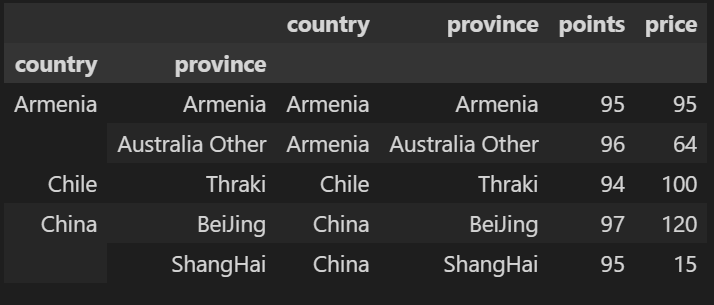
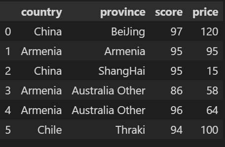

建立数据集
import pandas as pd
reviews = pd.DataFrame({'country':['China','Armenia','China','Armenia','Armenia','Chile'],
'province':['BeiJing','Armenia','ShangHai','Australia Other','Australia Other','Thraki'],
'points':[97,95,95,86,96,94],'price':[120,95,15,58,64,100]})
| index | country | province | points | price |
|---|---|---|---|---|
| 0 | China | BeiJing | 97 | 120 |
| 1 | Armenia | Armenia | 95 | 95 |
| 2 | China | ShangHai | 95 | 15 |
| 3 | Armenia | Australia Other | 86 | 58 |
| 4 | Armenia | Australia Other | 96 | 64 |
| 5 | Chile | Thraki | 94 | 100 |
pandas中describe()
1、count：返回数组的个数，如上述为4个元素，所以返回为4；
2、mean：返回数组的平均值，1 3 5 9的平均值为4.5；
3、std：返回数组的标准差；
4、min：返回数组的最小值；
5、25%，50%，75%：返回数组的三个不同百分位置的数值，也就是统计学中的四分位数，其中50%对应的是中位数。
6、max：返回列表的最大值。
reviews.describe()
| index | points | price |
|---|---|---|
| count | 6.000000 | 6.000000 |
| mean | 93.833333 | 75.333333 |
| std | 3.970726 | 37.574814 |
| min | 86.000000 | 15.000000 |
| 25% | 94.250000 | 59.500000 |
| 50% | 95.000000 | 79.500000 |
| 75% | 95.750000 | 98.750000 |
| max | 97.000000 | 120.000000 |
# 也可以具体到某个列属性
reviews.points.describe()
reviews.country.unique()
array(['China', 'Armenia', 'Chile'], dtype=object)
groupby()
实现分组操作，直接使用会得到一个DataFrameGroupBy对象。其就是将原有的DataFrame按照groupby的字段，划分为若干个分组DataFrame，被分为多少个组就有多少个分组DataFrame。所以说，在groupby之后的一系列操作（如agg、apply等），均是基于子DataFrame的操作。
按points值进行分组
reviews.groupby('points')
<pandas.core.groupby.generic.DataFrameGroupBy object at 0x000002C5A488FD30>
统计每组非None，NaN，NaT,numpy.inf值个数
reviews.groupby('points').points.count()
points
86 1
94 1
95 2
96 1
97 1
Name: points, dtype: int64
apply
按country分组，返回每组的province数据
reviews.groupby('country').apply(lambda df:df.province.iloc[:]) #若iloc[0]，则返回每组第一个province
country
Armenia 1 Armenia
3 Australia Other
4 Australia Other
Chile 5 Thraki
China 0 BeiJing
2 ShangHai
Name: province, dtype: object
以country和province两个值进行分组，返回points最大的行
reviews.groupby(['country','province']).apply(lambda df:df.loc[df.points.idxmax()])

agg聚合操作
常用的函数：
min:最小值；max:最大值；sum:求和；mean:平均值；median:中位数；std:标准差；var:方差；count:计数
以country进行分组，返回每组的个数，以及price的最小值，最大值
countries_reviewed = reviews.groupby(['country']).price.agg([len,min,max])
countries_reviewed
sort_values()
以country进行分组，利用聚合操作得到每组包含的样本个数，并根据len进行排序
countries_reviewed1 = reviews.groupby(['country']).price.agg([len])
countries_reviewed1 = countries_reviewed1.reset_index()
countries_reviewed1.sort_values(by='len',ascending=True) #默认升序
country len
1 Chile 1
2 China 2
0 Armenia 3
练习
1、选取分数(points)和价格(price)比率最大的数据
bargain_idx = (reviews.points/reviews.price).idxmax(axis=0) #axis=0按列计算，idxmax返回对应索引
reviews.loc[bargain_idx]
country China
province ShangHai
points 95
price 15
Name: 2, dtype: object
rename
修改points列名
reviews.rename(columns={'points':'score'})

修改行名
reviews.rename(index={0:'firstEntry',1:'secondEntry'})

给行、列索引进行命名
# reviews.rename_axis('wine',axis=1).rename_axis('filed',axis=0)
reviews.rename_axis('wines',axis='rows').rename_axis('fields',axis='columns') #给行列索引命名,rows可以替换为1，columns替换为0